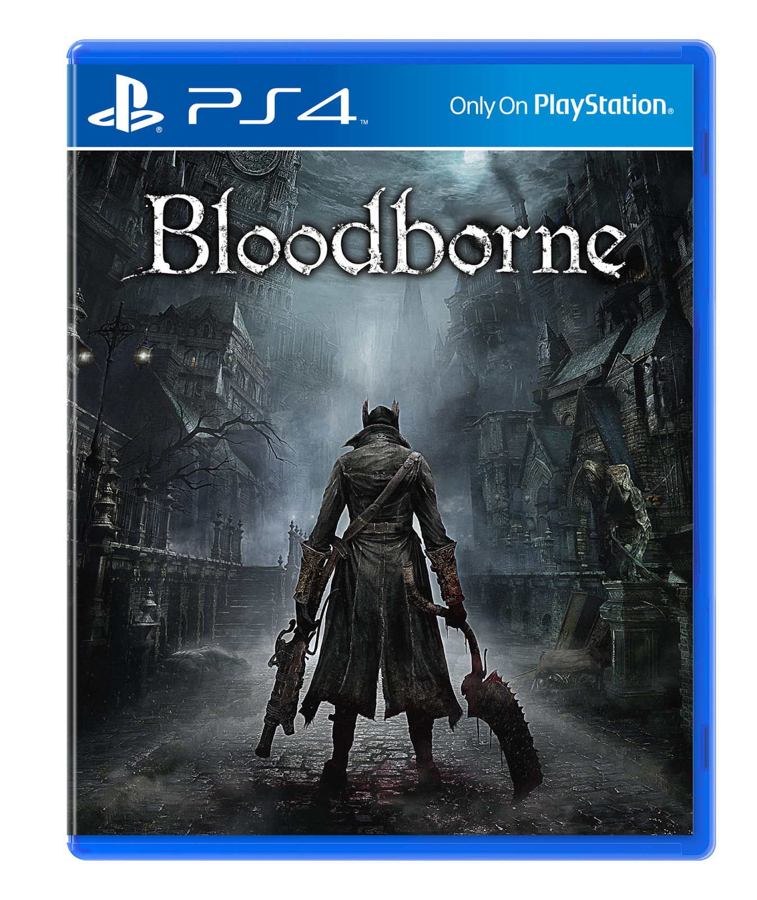
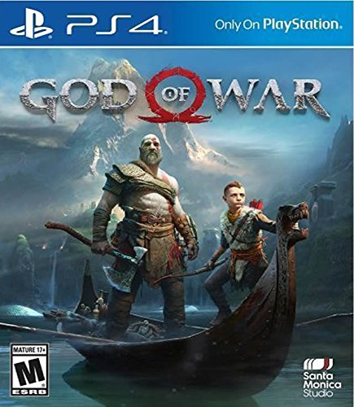

Playstation 4
For the fourth time, Sony has seen great success with their home console. The Playstation 4 has sold over 80 Million units worldwide as of 2018, meaning gamers all over the world have one. The PS4 is so successful thanks to it's exclusive games that can't be played anywhere else. The exclusive games for the system range from family friendly to bloody and intense. There's plenty of both, and it's easy to tell them apart.

Popular Playstation 4 games:
|  | Bloodborne was one of the first exclusive titles for the Playstation 4 to kickstart the system's popularity and is a spiritual successor to the Dark Souls franchise. Bloodborne is by all means an adult oriented game, the ESRB rated it M for Mature (17+) for "Blood, Gore, and Violence." The player assumes the role of a monster slaying protagonist in a gothic, disease ridden world. Even if Bloodborne's subject matter was appropriate for kids, the difficulty level certainly isn't. Even adults may find theirselves having to stop and take deep breaths every now and again. Age Recommendation: 16+ |
|---|---|
|  | This father-son adventure is for the adults. God of War (2018) is home to intense, bloody fights, and foul language, earning itself an M for Mature audiences ages 17+ (a series staple). The combat is centered around swinging Kratos' Leviathan Axe into enemies. Fantasy based animals are hunted with Atreus' bow. Sensitive topics are also explored, such as the deaths of loved ones. Age Recommendation: 17+ |
Not seeing the game you need to know about? Tell Us!